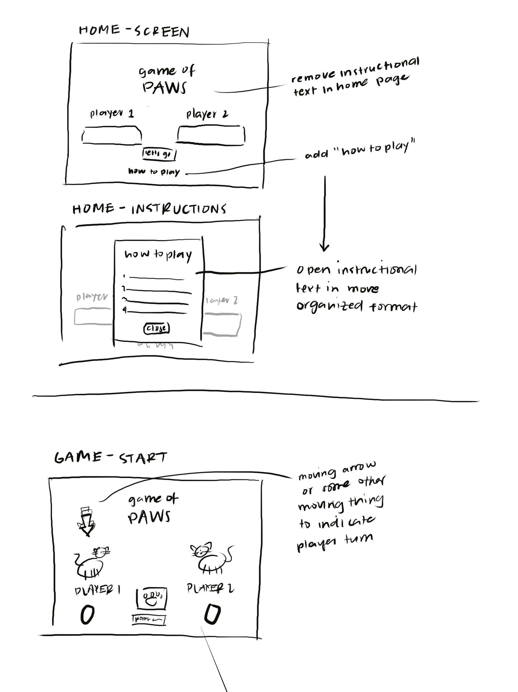
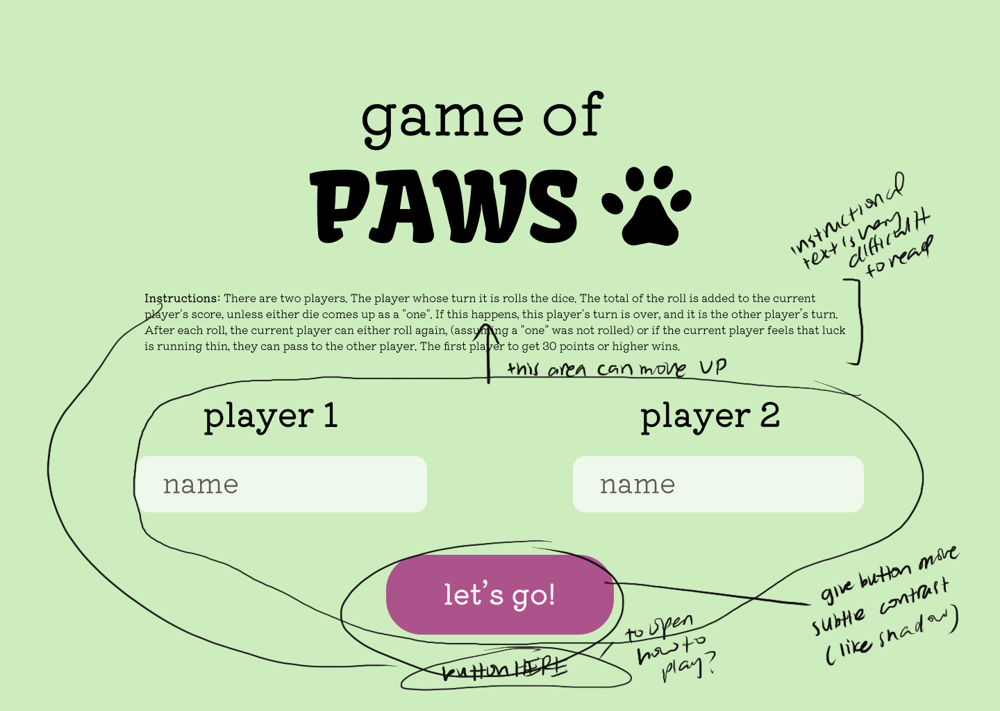
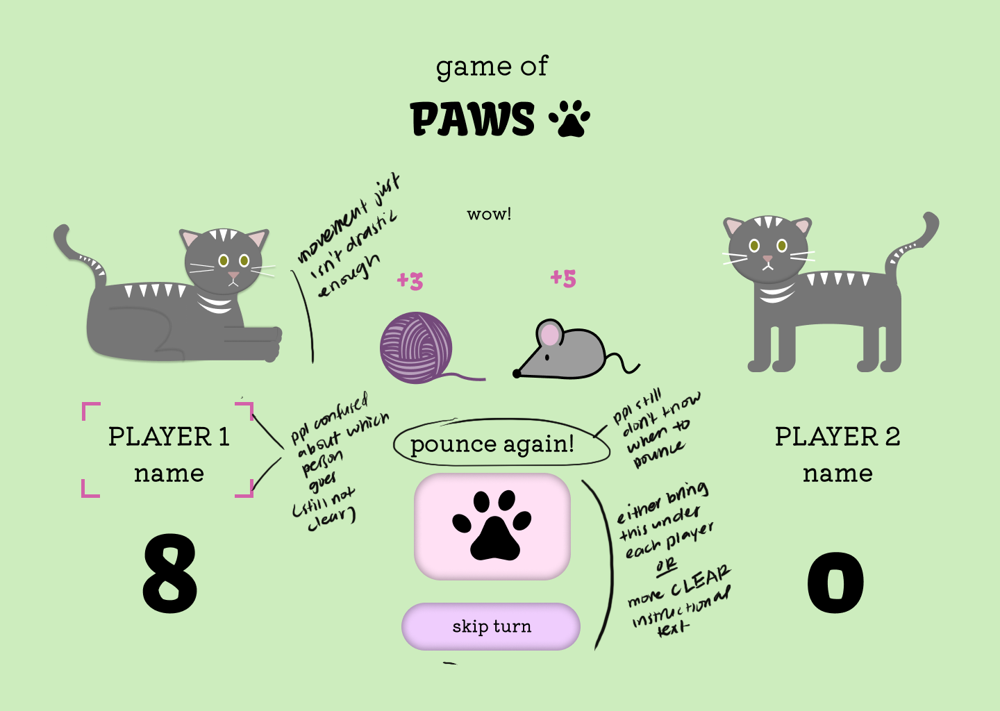

Expert 1 Review: Mandy
Expert Background:
- A friend who studies design, giving them foundational knowledge in visual design, layout, and user experience
- Someone who plays many games and therefore has hands-on familiarity with gameplay flow, game clarity, and interaction patterns
- They understand the mindset behind a gamer and what makes game interfaces intuitive and interesting
Design Feedback Notes:
Strengths
- The game concept is clear and easy to understand
- Visuals are cute, cohesive, and appealing to users
- The idea of “pouncing” instead of rolling dice adds charm and personality
- The overall UI feels friendly and accessible
Improvements
- Add more environmental visual detail (texture or background variation) to avoid flatness
- Better turn-indicator so players instantly know whose turn it is
- Provide a visible point-system reference using the toy icons somewhere
- Add more motion/animation to give the interface life
Expert 2 Review: Hannah
Expert Background:
- Professional graphic designer with formal training and industry experience
- Has a strong understanding of design composition and principles
- Can evaluate visual design decisions through both aesthetic and professional standards
Design Feedback Notes:
Strengths
- Overall visual theme (cats + toys) is engaging / cute
- The design direction is cohesive, with a clear visual style
- The game layout is readable and functional
- Strong use of imagery and character-driven design
Improvements
- Create stronger separation between the players visually (like background split, contrasting color fields, or framing)
- Add more visual interest through textures/depth/gradients/ shapes
- Better hierarchy so important game information stands out more clearly
- Add more motion/animation to give the interface life
- More consistency in spacing, alignment, and typography for more polished finish
Comp Markups & Sketches


